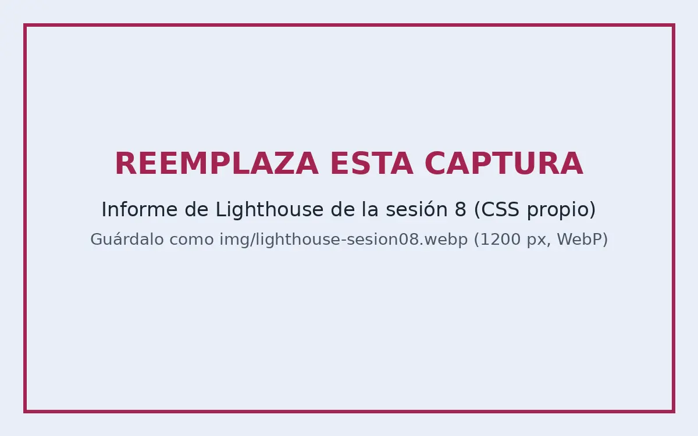
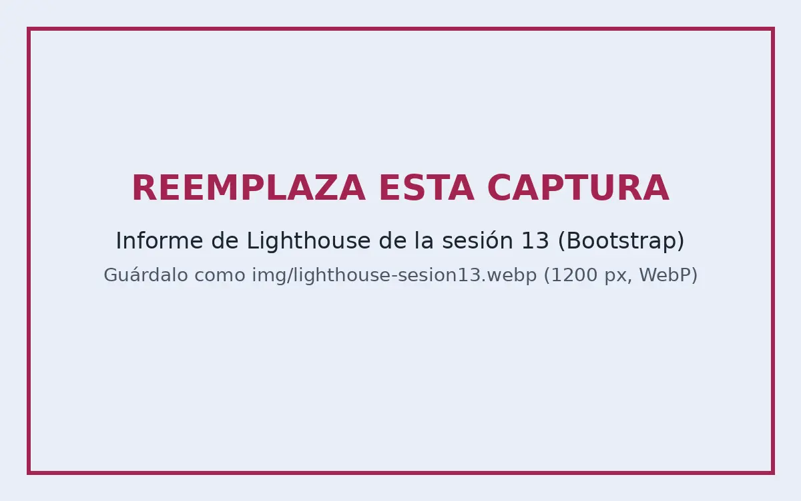

¿Bootstrap o CSS propio?
Hice la misma landing de Dulce Brisa dos veces: una con CSS propio en la sesión 8 y otra con Bootstrap en la sesión 13. Aquí comparo cómo me fue con cada una.
Informes de Lighthouse

Sesión 8 · CSS propio
Informe en modo móvil, en incógnito y sobre el enlace publicado.

Sesión 13 · Bootstrap
Informe en modo móvil, en incógnito y sobre el enlace publicado.
Conclusión
Para el proyecto final mi propuesta es usar nuestro propio kit de CSS y dejar Bootstrap solo para piezas puntuales, como el menú colapsable o la ventana modal.
- La rúbrica califica Flexbox, Grid, responsive desde 360 px, variables CSS y un kit de componentes. Con Bootstrap esas piezas las resuelve la librería y yo no tendría código propio que mostrar.
- En la sustentación hay que explicar y cambiar código en vivo. Con mi CSS puedo explicar cada línea; con Bootstrap tendría que justificar clases que no escribí.
- Bootstrap me ahorró trabajo: 56 líneas de CSS contra 165 y ninguna media query contra 3. Pero la página descarga unos 306 KB extra, frente a unos 4 KB de mi CSS.
- Con Bootstrap la página se parece a muchas otras; con mi propio kit se ve única.
- Aun así, Bootstrap es útil para hacer prototipos rápido y para componentes con JavaScript. Su modal cierra con Escape, algo que mi versión con
:targetno hace.